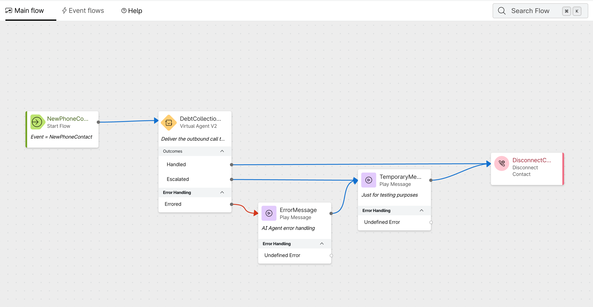
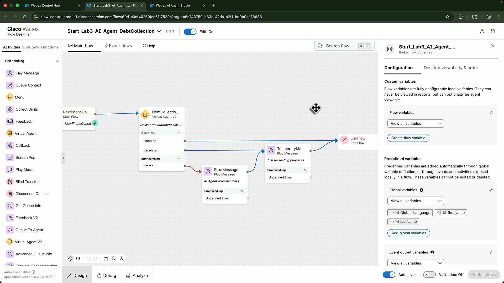
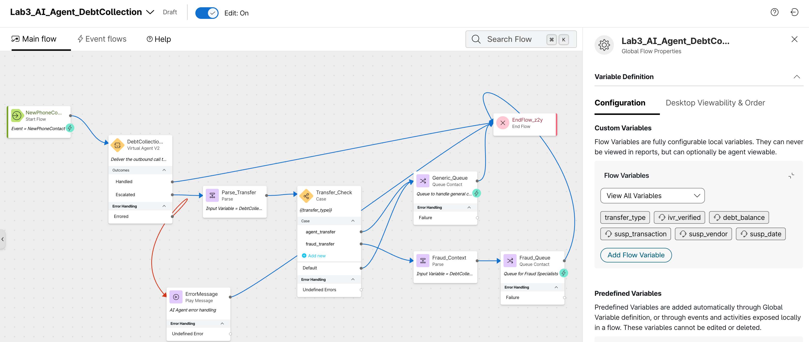
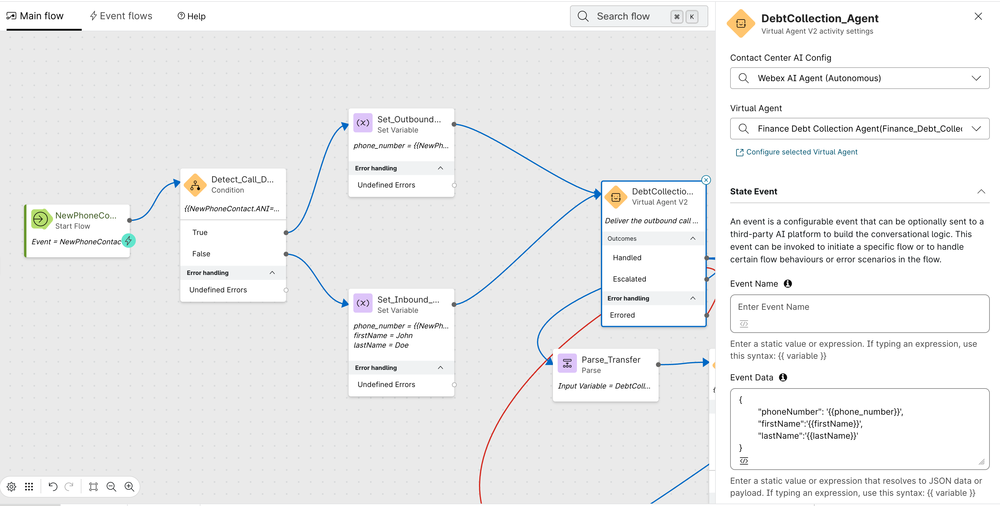
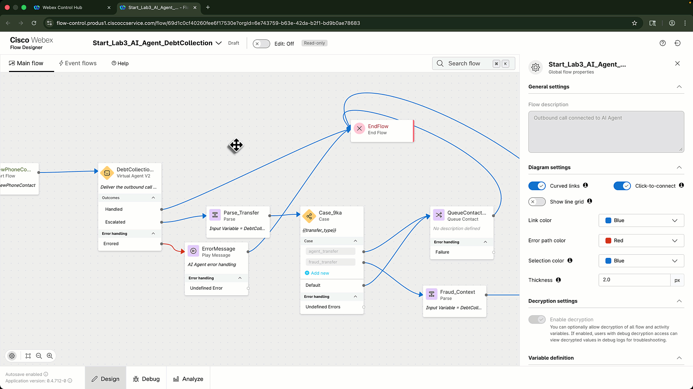
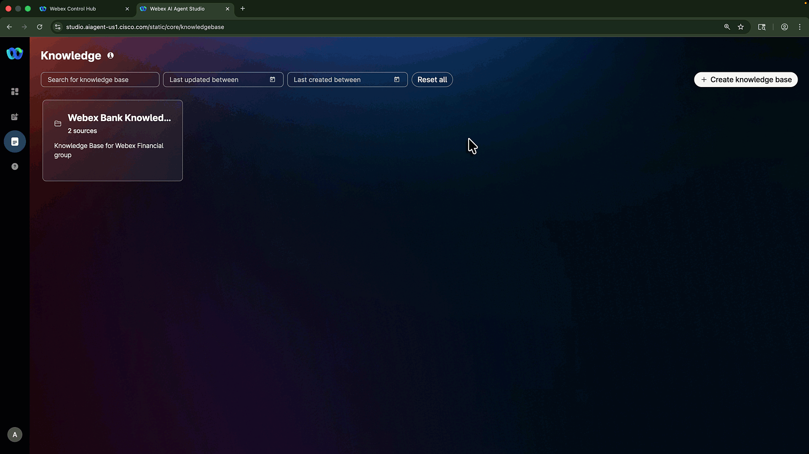
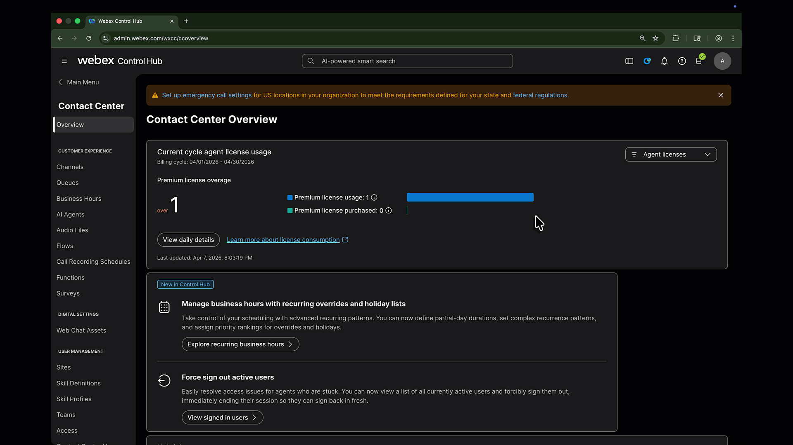

Lab 3 - Real-Time Assist¶
Lab Purpose¶
In Lab 2, you connected the outbound campaign to Alex, a Webex AI Agent. In this lab, you will add a human-assist path using Webex Contact Center AI Assistant, Real-Time Transcription, Generated Summaries, and Real-Time Assist.
This lab focuses on building the human-assist path and validating that the human agent receives useful guidance and can run the approved fraud-resolution actions during a live call.
Lab Objectives
By the end of this lab, you will be able to:
- Configure Alex to transfer fraud scenarios with context.
- Route the human handoff and enable Real-Time Transcription in the flow.
- Create a fraud Knowledge Base, then create a Real-Time Assist skill and configure its fulfillment actions.
- Assign the skill to the Fraud Queue.
- Create and assign a custom generated-summary template.
- Update the routing flow on the POD-specific inbound entry point for direct testing.
- Validate transcript, summary, and guidance during a human escalation scenario.
Lab Outcome
A human agent receives the call after Alex escalates. The Agent Desktop shows Real-Time Transcript, AI Assistant guidance, and a generated summary.
Pre-requisites¶
In order to complete this lab, you must have:
- Completed Lab 2 - AI Agent.
- The AI Assistant features have been enabled for the shared lab tenant.
- The
fetch_transactionsandopen_caseWebex Connect flows are available in the lab tenant.
Lab Overview¶
In this lab you will perform the following tasks:
- Configure Alex to transfer fraud scenarios with context.
- Configure the Fraud Queue and complete the handoff, transcription, and inbound test-path changes in Flow Designer.
- Create a fraud Knowledge Base, then create the Real-Time Assist skill and configure its fulfillment actions.
- Assign the skill to the queue.
- Create and assign a custom generated-summary template.
- Configure the inbound test path, update the pre-created inbound entry point, and test the assisted handoff.
Lab 3.1 - Configure the Fraud Transfer¶
Lab 2 leaves the Escalated outcome on a temporary path. Create a native transfer action so Alex can hand the fraud scenario to a human agent with the relevant context.
Create the Transfer Action
- Open Alex in Webex AI Agent Studio and select the Actions tab.
- Select Add Actions > Transfer.
-
Use the following action details:
Field Value Action name fraud_transferDescription Transfer the call to a fraud specialist when the customer reports a suspicious transaction. -
Add these input entities to carry the handoff context:
Entity Type Required Description ivr_verifiedString Yes Whether the customer completed authentication. debt_balanceNumber No Confirmed debt balance. susp_transactionNumber No Amount of the suspicious transaction. susp_vendorString No Vendor for the suspicious transaction. susp_dateDate No Date of the suspicious transaction. -
In Alex's instructions, add this escalation rule:
-
Save and publish Alex.
Transfer Action Setup

Lab 3.2 - Create the Fraud Queue and Route the Handoff¶
Lab 1.1 creates the team and Lab 1.2 creates an outbound-only queue. Create a separate inbound queue for the human escalation, using the team that contains your POD agent.
Create the Fraud Queue
- In Collaboration Control Hub, navigate to Contact Center > Queues.
-
Click Create a queue and configure:
Field Value Name PODXX_FraudQueueContact direction Inbound queueChannel type TelephonySkills-based routing Disabled Agent assignment TeamsRouting pattern Longest available -
Under Call distribution, click Create a group.
- In Group 1, select the Lab 1 team that contains your POD agent.
- Complete the required queue settings, then create the queue.
Team Setup
Lab 1.1 creates the team. Before testing this lab, confirm that your POD agent is assigned to that team and is available in Agent Desktop.
Lab 3.3 - Configure the AI Agent Flow¶
Make the Main Flow changes first, then configure Real-Time Transcription in Event Flows and publish once after the complete update.
Route Escalation to the Queue
-
Open the
PODXX_AI_Agent_DebtCollectionInitial Flow View

Initial flow before configuring the escalation path. -
In the Activity Settings panel for the Virtual Agent V2 node, scroll to Output Variables. The
MetaDataoutput contains the transfer-action details that you will map in the following steps. -
Open Global Flow Properties, create the following custom flow variables, and mark the agent-viewable context values as shown.
Variable Type Default value Agent viewable Desktop label transfer_typeString agent_transferNo N/A ivr_verifiedString FalseYes IVR Verifieddebt_balanceDecimal 0.0Yes Debt Balancesusp_transactionDecimal 0.0Yes Transaction Amountsusp_vendorString UnknownYes Transaction Vendorsusp_dateString N/AYes Transaction DateCreate Flow Variables

Creating the flow variables used to pass context to the human agent. -
Delete the temporary Play Message node connected to the Escalated outcome. Connect the existing error Play Message node directly to End Flow.
-
Drag a Parse node onto the canvas, connect it to the Escalated path, name it
Parse_TransferCollects the transfer type.Configure it to extract the transfer type from the Virtual Agent V2 metadata.Setting Value Input DebtCollectionAgent.MetaDataContent type JSON Output variable transfer_typePath $.escalation_triggerAI Agent Metadata
The
MetaDataoutput contains the actions and values collected during the AI Agent session. Theescalation_triggervalue identifies the transfer action that Alex used. -
Add a Case node, connect the output from Parse_Transfer to it, name it
Transfer_CheckChecks the transfer_type variable to route accordingly.Configure these Case settings:Setting Value Variable transfer_typeCase 1 agent_transferCase 2 fraud_transfer -
Add a Queue Contact node for the
agent_transferpath, name itGeneric_QueuePODXX_FraudQueueagent_transferand default paths from Transfer_Check to this node, then connect its output to End Flow. -
Add a second Parse node named
Fraud_Contextfraud_transferpath from Transfer_Check to this node. UseDebtCollectionAgent.MetaDataas its input, set Content type toJSON, and map thefraud_transferaction input into the agent-viewable variables:Output variable JSON path ivr_verified$.actions.fraud_transfer[0].input.ivr_verifieddebt_balance$.actions.fraud_transfer[0].input.debt_balancesusp_transaction$.actions.fraud_transfer[0].input.susp_transactionsusp_vendor$.actions.fraud_transfer[0].input.susp_vendorsusp_date$.actions.fraud_transfer[0].input.susp_date -
Add a Queue Contact node named
Fraud_QueuePODXX_FraudQueueFinal Flow View

Final flow with context extraction and queue routing configured. Extract AI Agent Context

Configuring the escalation path and extracting AI Agent context.


Add the Inbound Test Path
Use the same flow for campaign and inbound calls, so testing does not depend on waiting for Campaign Manager. If the ANI matches the campaign outdial number, the call is outbound and the flow sends the customer's DNIS to Alex. Otherwise, the call is inbound and the flow sends the caller's ANI.
- In
PODXX_AI_Agent_DebtCollection -
Under Custom Flow Variables, create this variable:
Variable name Type Default value phone_numberString(empty) -
On the canvas, drag a Condition node immediately after the New Contact start node.
-
Rename the node
Detect_Call_Direction{{NewContact.ANI=="+17382033500"}}This is the outdial ANI configured for the campaign. A matching ANI follows the outbound path.
-
Configure the True path for outbound calls:
- Add a Set Variable node and connect it to the True output.
- Name it
Set_Outbound_Phone - Set
phone_numberto{{NewContact.DNIS}}.
-
Configure the False path for inbound calls:
Inbound Test Flow

Complete inbound and outbound call-direction flow. - Add a Set Variable node and connect it to the False output.
- Name it
Set_Inbound_Phone -
Set the following variables:
Variable Set value phone_number{{NewContact.ANI}}firstNameFirst name of your test customer from Lab Prework lastNameLast name of your test customer from Lab Prework
-
Connect both Set Variable nodes to the existing Virtual Agent V2 node (
DebtCollectionAgent). -
In the State Event data for that node, use:

Configure Real-Time Transcription
Real-Time Transcription requires media streaming to start when the human agent accepts the call.
- Go to Event Flows.
- Drag a Start Media Stream node onto the canvas.
-
Connect the AgentAnswered event node to Start Media Stream.
Event Name
In some tenants, AgentAnswered appears as AgentAccepted. Use the event that is available in your Flow Designer.
-
Connect Start Media Stream to End Flow.
- Validate and publish the flow.
Configure RTT in Event Flows


Lab 3.4 - Create the Real-Time Assist Skill¶
Create the Fraud Knowledge Base
Create a dedicated Knowledge Base for your RTA skill. A Knowledge Base can be associated with only one AI Assistant skill, so do not select a Knowledge Base already in use by another attendee's skill.
Knowledge Base document
- In Webex AI Agent Studio, select Knowledge in the left navigation.
- Click Create Knowledge Base.
- Enter
Fraud_KB - Select Add source > Files, then upload the downloaded
Fraud_KB.docxdocument. - Click Process Files. You can select Close and keep processing while the file is processed.
- Wait until the source status is Processed before creating the RTA skill.
Configure Fraud Knowledge Base


Create the RTA Skill
- Open Webex AI Agent Studio from Collaboration Control Hub.
- Select the AI Assistant Skill icon in the left navigation.
- Click + Create Skill, select Start from scratch, then click Next.
-
Use the following values:
Field Value Skill name PODXX_RTA_AssistantGoal You are an ai assistant working for Webex Financial Group. You will be assisting human agents that are specialized in handling fraud scenarios for our customers. Provide timely recommendations about our fraud prevention and dispute transaction policies. -
Add or confirm the instructions:
# AI Assistant Action Orchestration Before asking the AGENT to collect any data from the CUSTOMER, check the conversation history. If the data was already provided, reuse it instead of asking again. If the AGENT has acknowledged the CUSTOMER's intent but has not yet asked for the specific required data, do not repeat or pre-empt the suggestion. Allow the conversation to progress. When calling tools: Use ONLY values the customer explicitly provided. NEVER infer, construct, extract digits from other fields, use example values, add UNKNOWN or use default/placeholder values (like "00:00", "0", etc.). Missing required parameter = ASK user. Missing optional parameter = OMIT it entirely. NO exceptions. The CustomerID format is CUST-001, agent only needs to collect the last 3 digits. ## Collect Recent Transactions **Always follow these instructions before moving to the "Identify Fraudulent Transaction" section.** 1. **Fetch Recent Transactions**: Ask the AGENT to get the CUSTOMER ID at the beginning of the call. Use the CUSTOMER ID to execute [fetch_transactions] action to get the recent transactions. 2. **Provide Transaction Details**: Once transactions are fetched, provide the AGENT with the following details for each transaction: - Transaction Amount - Transaction Vendor - Transaction City - Transaction Date 3. **Error Handling**: If there are no transactions available, instruct the AGENT to check the banking system manually. If the banking system is unresponsive, advise the agent to escalate the issue. ## Identify Fraudulent Transaction 1. **Guide the AGENT**: Confirm if the transaction identified as suspicious could have been made by someone else with access to the account or if the CUSTOMER recognizes the amount but not the vendor. Prompt the agent to ask the customer if they have any recent transactions that they do recognize. 2. **CUSTOMER confirms the transaction is fraudulent**: Explain to the AGENT that they need to open a dispute case to investigate the transaction. Guide the agent to inform the customer that opening the case will automatically lock the CUSTOMER's credit card and ship a new one to the address on file. The AGENT needs to get confirmation from the CUSTOMER before the case is opened. 3. **Once the CUSTOMER confirms**: Execute the [open_case] action. **If the CUSTOMER declines**: If the CUSTOMER has a reason to decline their card getting locked, guide the agent to ask them to provide a reason and look for alternative options. Shipment of the credit card can be expedited from 5 days to 2 days in case of travel or other time sensitive activities. 4. **Provide Case ID**: Once the case is opened, provide the AGENT with the case ID that is returned by the action. Guide the agent to share the case ID to the customer and explain it's important to keep track of their dispute. ### Additional Considerations - **User Experience**: Ensure that the language used is empathetic and supportive, as customers may be distressed about potential fraud. -
Attach the
Fraud_KBKnowledge Base you just created.Note
Select the Knowledge Base that you created for this skill. Do not attach a Knowledge Base already associated with another AI Assistant skill.
Configure Fulfillment Actions
Create two actions in the skill and associate each with its matching Webex Connect flow. Do not open or modify Webex Connect.
- In the skill, open the Actions tab and select + New Action.
-
Create the
fetch_transactionsaction:Field Value Action name fetch_transactionsDescription Retrieve recent account transactions using the confirmed Customer ID.Action scope Slot filling and fulfillment -
Add one required input entity:
Entity Type Value Agent review CustomerIDRegexCUST-\d{3}Yes -
In the Webex Connect Flow Builder Fulfillment section, select the
LAB_31207fetch_transactionsflow. Save the action. -
Create the
open_caseaction:Field Value Action name open_caseDescription Open a fraud case for a confirmed Customer ID and disputed Transaction ID.Action scope Slot filling and fulfillment -
Add the following required input entities. Select Agent review for both, so the human agent verifies the case details before the action runs.
Entity Type Description CustomerIDRegex(CUST-\d{3})Confirmed customer identifier. TransactionIDStringIdentifier returned by fetch_transactions; do not ask the customer for it. -
Select the
LAB_31207open_caseflow, then save the action. - Publish the skill.
Action Design
Use a precise entity description and an example for each predictable value. A fulfillment action that opens a case should always be reviewed by the human agent before execution. The case action returns either its Case ID or its completion result to the AI Assistant; attendees do not need access to Airtable to validate it.
AI Assistant Skill Configuration

Lab 3.5 - Assign the Skill to the Queue¶
Assign RTA Skill
- Go to Collaboration Control Hub > Contact Center > AI Features.
- Open the Queue tab.
- Select
PODXX_FraudQueue - In the Real-Time Assist section, enable Apply Real-Time Assist.
- Select
PODXX_RTA_Assistant - Save the queue configuration.
Assign Skill to Queue


Skill-to-Queue Mapping
RTA skills are assigned to queues. Any agent receiving a call from the assigned queue should receive the skill's guidance for that interaction.
Lab 3.6 - Create a Custom Generated-Summary Template¶
Custom Templates let you tailor the post-call summary to the fraud-handoff workflow.
Create and Publish the Template
- In Webex AI Agent Studio, open Summary Templates.
- Select Create Template and name it
PODXX_Fraud_Handoff_Summary - In Configuration summary, keep Initial contact reason and Next steps enabled. Disable Key actions taken and Additional context.
-
Add two New custom section entries. For each entry, complete Title and Instructions; leave Example (optional) blank.
Title Instructions Financial account details Capture the confirmed balance, payment intent, and payment outcome when discussed. Fraud case details Capture the disputed transaction's amount, vendor, and date, plus the returned Case ID or result when a case is opened. -
Use the preview/test experience with a sample conversation. Confirm each section is populated clearly and does not invent missing details.
- Publish the template.
- In Collaboration Control Hub, navigate to Contact Center > AI Features, open the Queue tab, and select
PODXX_FraudQueue - In Generated Summaries, enable summaries for the queue. In the Templates dropdown, select
PODXX_Fraud_Handoff_Summary
Lab 3.7 - Configure the Pre-Created Inbound Entry Point¶
Each POD already has an inbound telephony entry point and assigned inbound DN. Do not create a new entry point.
Update the Inbound Entry Point Routing
- In Collaboration Control Hub, navigate to Contact Center > Channels > Entry Points.
- Find and open your pre-created inbound entry point:
Inbound_EP_<yourpodnumber> - In Routing flow, replace
To_be_replacedPODXX_AI_Agent_DebtCollection - Save the entry point.
Keep the Pre-Created Inbound Settings
Do not change the entry point name, inbound DN, channel type, timezone, music on hold, or any other pre-created setting. Only replace the Routing flow value.
Lab 3.8 - Test RTA¶
Execute the Test
- Place a call to the inbound DN already assigned to your POD's entry point, or start the outbound call from Campaign Manager.
-
Complete Alex's authentication flow, then ask to review your recent transactions. When Alex presents them, trigger the escalation path by saying:
I don't recognize that transaction. -
Confirm that Alex collects the suspicious transaction details and transfers the call to the fraud specialist.
- Accept the call as the human agent.
-
Confirm the Agent Desktop shows:
Feature Expected Result Real-Time Transcript Live transcript appears after the agent accepts the call. AI Assistant Guidance appears during the conversation. RTA Skill Guidance matches the dispute/fraud scenario. Fulfillment actions The agent can review and run the configured fetch_transactionsandopen_caseactions when the conversation requires them.Generated Summary Summary appears in the wrap-up panel after call completion. -
End the call and review the generated summary.
Suggested Test Conversation
Use this conversation after the call reaches the human agent to exercise the RTA guidance and fulfillment actions. Adapt the transaction details to the information Alex and the customer already discussed.
- As the human agent, acknowledge the concern and say:
I can help with that. Let me review the recent transactions with you. - Review the
fetch_transactionsrecommendation, confirm the Customer ID when prompted, and run the action. - Confirm the disputed transaction with the customer by restating its amount, merchant, and date. Then ask:
Would you like me to open a fraud case for this transaction? - After the customer agrees, review the
open_caserecommendation, confirm the Customer ID and Transaction ID, and run the action. - Share the returned Case ID or completion result with the customer, then end the call and inspect the generated summary.
Troubleshooting
- No transcript: Confirm Start Media Stream is connected from AgentAnswered or AgentAccepted.
- No RTA guidance: Confirm the skill is published and assigned to the queue receiving the call.
- Fulfillment action is unavailable: Confirm the corresponding Webex Connect flow is live and selected in the action configuration.
Lab Completion¶
At this point, you have successfully:
- Created the
fraud_transferaction and routed its context to the human agent.- Created the POD-specific Fraud Queue.
- Confirmed the flow can start media streaming for RTT.
- Created the
Fraud_KBKnowledge Base and associated it with the RTA skill. - Created an RTA skill and configured its fulfillment actions.
- Assigned the skill to the queue.
- Created and assigned a custom generated-summary template.
- Updated the routing flow on the POD-specific pre-created inbound entry point for direct testing.
- Tested human-agent guidance and the fulfillment actions during the escalation scenario.
Congratulations! You have completed the LAB-31207 core journey: native Campaign Manager to AI Agent, with Real-Time Assist for the human handoff.